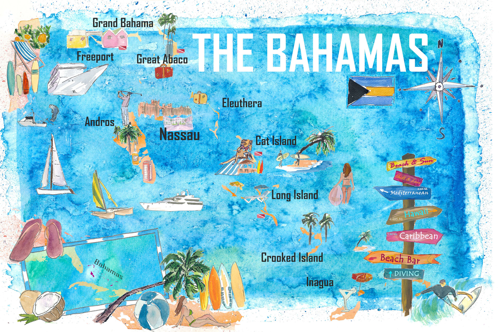
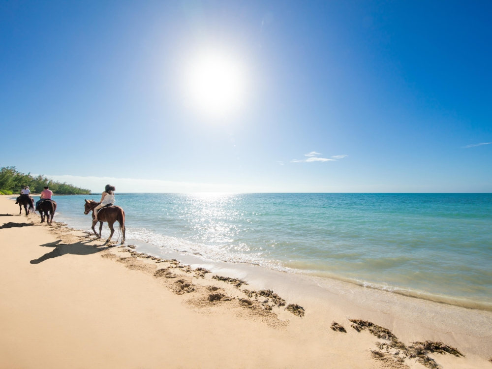
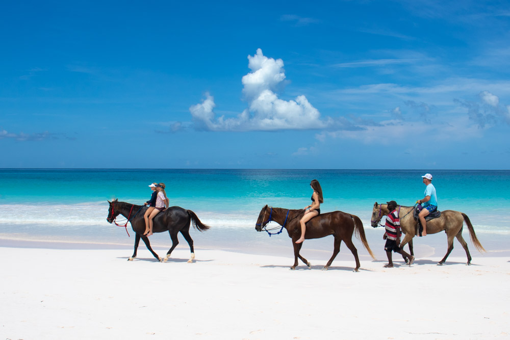
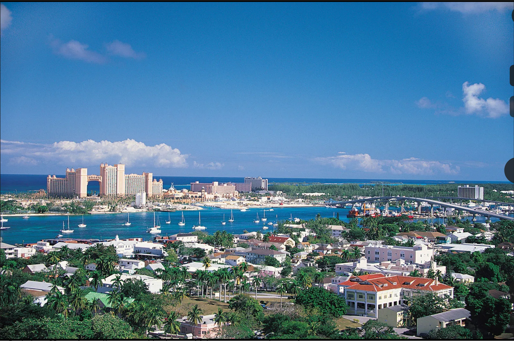
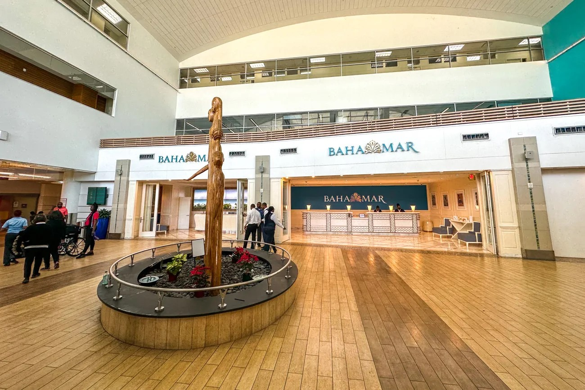
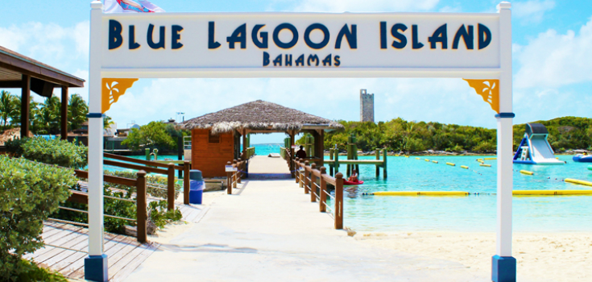
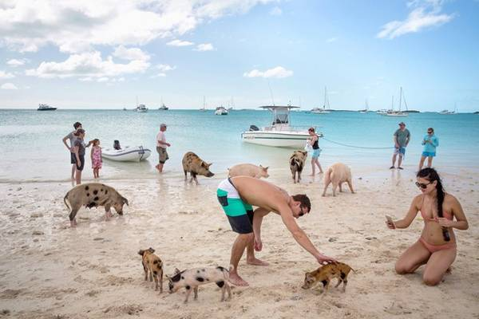
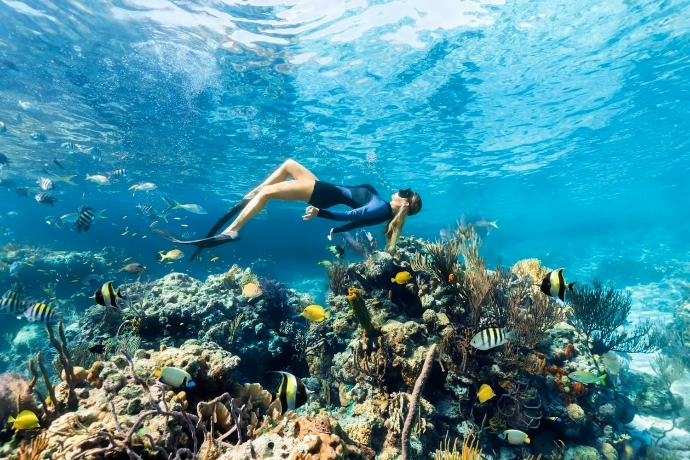

Tổng quan:
Bahamas là một chuỗi đảo gồm hơn 700 hòn đảo và bãi cát, nổi tiếng với biển màu ngọc lam, bãi cát trắng mịn và các hoạt động biển sôi động. Thời điểm tốt nhất để đến Bahamas là vào mùa cao điểm, từ tháng 11 đến tháng 4, khi thời tiết ấm áp và nhiều nắng với ít mưa. Giai đoạn này mang đến điều kiện lý tưởng để tận hưởng bãi biển và các hoạt động ngoài trời.
- 🔎 Chuyến bay Từ: Sân bay Quốc tế Dulles (IAD) đến: Lynden Pindling (NAS)
- Hãng bay có thể chọn: American Airlines, JetBlue, Southwest, Delta..
- 🕒 Mẹo: Đặt trước ít nhất 4–8 tuần để có giá tốt.
- Tìm các gói bao gồm cả chuyến bay + khách sạn để tiết kiệm (Expedia, Costco Travel, v.v.)

Điểm đến nổi bật ở Bahamas .
- Nassau (New Providence). Thủ đô, trung tâm du lịch, có Atlantis, bãi biển Cable
- Paradise Island. Resort nổi tiếng, có công viên nước, sòng bài
- Exuma Cays. Bơi với lợn hoang, biển màu xanh ngọc đẹp nổi bật
- Blue Lagoon Island. Gần Nassau, bơi với cá heo, sư tử biển, chèo kayak
- Harbour Island. Bãi biển cát hồng nổi tiếng thế giới
- Andros. Rặng san hô lớn thứ 3 thế giới, lý tưởng lặn biển

🏨 Khách sạn/Khu nghỉ dưỡng ở Bahamas
Atlantis Paradise Island
- Vị trí: Paradise Island
- Resort nổi tiếng nhất, công viên nước, sòng bài
- 🍽️ Số nhà hàng: 20+

Baha Mar (Grand Hyatt)
- Vị trí: Nassau
- 🍽️ Số nhà hàng: 30+
- Nghỉ dưỡng sang trọng, hồ bơi, sân golf

Sandals Royal Bahamian (Adults Only)
- Vị trí: Nassau
- 🍽️ Số nhà hàng: 10+
- All-inclusive, dành cho cặp đôi

RIU Palace Paradise Island (Adults Only)
- Vị trí: Paradise Island
- 🍽️ Số nhà hàng: 5+
- All-inclusive, gần bãi biển đẹp

📌 Lưu ý chung khi chọn resort all-inclusive
- Giá đã bao gồm: ăn uống, nước uống, snack, minibar, hoạt động giải trí, thể thao nước nhẹ, show đêm.
- 🧾 Tipping 10–15% thường không bắt buộc, nhưng được khuyến khích.

Dưới đây là hướng dẫn từng bước hoàn chỉnh cho chuyến đi 5 ngày du lịch của bạn từ Fairfax, VA đến Bahamas

🎒Chuẩn bị
- Giấy tờ cần có: Hộ chiếu Mỹ: còn hạn đến hết thời gian ở Bahamas.
- Không cần visa cho công dân Hoa Kỳ (ở dưới 90 ngày).
- Vé máy bay khứ hồi. Giấy xác nhận đặt khách sạn
- Tiền tệ: Bahamas Dollar (BSD) = 1:1 với USD (USD dùng rộng rãi)
- Thẻ tín dụng phổ biến: Visa, Mastercard, Amex
- Điện thoại & Internet: Dùng eSIM quốc tế hoặc roaming AT&T/T-Mobile/Verizon (nhớ kiểm tra cước).
- Đồ bơi, kính râm, nón rộng vành, kem chống nắng SPF 50+
- Giày sandal, đồ thể thao nhẹ
- Thuốc cá nhân, thuốc say sóng nếu đi thuyền

📅 Ngày 1: Đến Nassau – Check-in – Thư giãn bãi biển
- Hạ cánh sân bay Lynden Pindling (NAS)
- Check-in khách sạn/resort (Baha Mar, Atlantis, Sandals…)
- Chiều: Nghỉ ngơi ở hồ bơi hoặc bãi biển riêng
- Tối: Ăn tối tại nhà hàng Fish by José Andrés hoặc Café Martinique

📅 Ngày 2: Tham quan Nassau + Blue Lagoon
- Sáng: Tham quan trung tâm Nassau (The Queen’s Staircase, Straw Market)
- Trưa: Ăn tại Arawak Cay (Fish Fry)
- Chiều: Đi tour đảo Blue Lagoon – chơi cùng cá heo, sư tử biển
- Tối: Về resort, thưởng thức buffet hoặc nhà hàng riêng

📅 Ngày 3: Tour đảo Exuma – bơi với lợn
- Ngày trọn vẹn đi tour bằng thuyền đến Exuma Cays
- Bơi với lợn, cho cá mập ăn, Sandbar, Thunderball Grotto
- Tour trọn gói thường $200–$400/người
- Tối: Ăn nhẹ, nghỉ ngơi tại resort

📅Ngày 4: Công viên nước hoặc lặn biển
- Nếu ở Atlantis, khám phá công viên nước Aquaventure
- Hoặc đặt tour lặn biển/snorkeling ở rạn san hô Andros
- Trưa: Ăn tại Shake Shack Atlantis hoặc nhà hàng trong resort
- Tối: Thử vận may tại casino hoặc xem show trực tiếp

📅Ngày 5: Thư giãn – Mua sắm – Trở về Mỹ
- Sáng: Tắm biển lần cuối hoặc spa
- Mua quà lưu niệm tại Bay Street
- Check-out, ra sân bay (đến sớm để làm thủ tục US Customs tại Nassau)